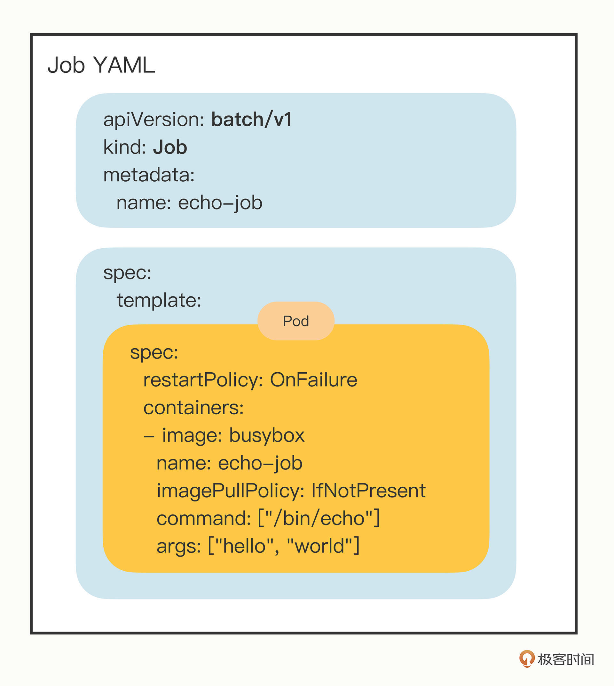

- 00 开篇词 迎难而上，做云原生时代的弄潮儿.md
- 00 课前准备 动手实践才是最好的学习方式.md
- 01 初识容器：万事开头难.md
- 02 被隔离的进程：一起来看看容器的本质.md
- 03 容器化的应用：会了这些你就是Docker高手.md
- 04 创建容器镜像：如何编写正确、高效的Dockerfile.md
- 05 镜像仓库：该怎样用好Docker Hub这个宝藏.md
- 06 打破次元壁：容器该如何与外界互联互通.md
- 07 实战演练：玩转Docker.md
- 08 视频：入门篇实操总结.md
- 09 走近云原生：如何在本机搭建小巧完备的Kubernetes环境.md
- 10 自动化的运维管理：探究Kubernetes工作机制的奥秘.md
- 11 YAML：Kubernetes世界里的通用语.md
- 12 Pod：如何理解这个Kubernetes里最核心的概念？.md
- 13 Job_CronJob：为什么不直接用Pod来处理业务？.md
- 14 ConfigMap_Secret：怎样配置、定制我的应用.md
- 15 实战演练：玩转Kubernetes（1）.md
- 16 视频：初级篇实操总结.md
- 17 更真实的云原生：实际搭建多节点的Kubernetes集群.md
- 18 Deployment：让应用永不宕机.md
- 19 Daemonset：忠实可靠的看门狗.md
- 20 Service：微服务架构的应对之道.md
- 21 Ingress：集群进出流量的总管.md
- 22 实战演练：玩转Kubernetes（2）.md
- 23 视频：中级篇实操总结.md
- 24 PersistentVolume：怎么解决数据持久化的难题？.md
- 25 PersistentVolume + NFS：怎么使用网络共享存储？.md
- 26 StatefulSet：怎么管理有状态的应用？.md
- 27 滚动更新：如何做到平滑的应用升级降级？.md
- 28 应用保障：如何让Pod运行得更健康？.md
- 29 集群管理：如何用名字空间分隔系统资源？.md
- 30 系统监控：如何使用Metrics Server和Prometheus？.md
- 31 网络通信：CNI是怎么回事？又是怎么工作的？.md
- 32 实战演练：玩转Kubernetes（3）.md
- 33 视频：高级篇实操总结.md
- 加餐 docker-compose：单机环境下的容器编排工具.md
- 加餐 谈谈Kong Ingress Controller.md
- 结束语 是终点，更是起点.md
13 Job_CronJob：为什么不直接用Pod来处理业务？
你好，我是Chrono。
在上次的课里我们学习了Kubernetes的核心对象Pod，用来编排一个或多个容器，让这些容器共享网络、存储等资源，总是共同调度，从而紧密协同工作。
因为Pod比容器更能够表示实际的应用，所以Kubernetes不会在容器层面来编排业务，而是把Pod作为在集群里调度运维的最小单位。
前面我们也看到了一张Kubernetes的资源对象关系图，以Pod为中心，延伸出了很多表示各种业务的其他资源对象。那么你会不会有这样的疑问：Pod的功能已经足够完善了，为什么还要定义这些额外的对象呢？为什么不直接在Pod里添加功能，来处理业务需求呢？
这个问题体现了Google对大规模计算集群管理的深度思考，今天我就说说Kubernetes基于Pod的设计理念，先从最简单的两种对象——Job和CronJob讲起。
为什么不直接使用Pod
现在你应该知道，Kubernetes使用的是RESTful API，把集群中的各种业务都抽象为HTTP资源对象，那么在这个层次之上，我们就可以使用面向对象的方式来考虑问题。
如果你有一些编程方面的经验，就会知道面向对象编程（OOP），它把一切都视为高内聚的对象，强调对象之间互相通信来完成任务。
虽然面向对象的设计思想多用于软件开发，但它放到Kubernetes里却意外地合适。因为Kubernetes使用YAML来描述资源，把业务简化成了一个个的对象，内部有属性，外部有联系，也需要互相协作，只不过我们不需要编程，完全由Kubernetes自动处理（其实Kubernetes的Go语言内部实现就大量应用了面向对象）。
面向对象的设计有许多基本原则，其中有两条我认为比较恰当地描述了Kubernetes对象设计思路，一个是“单一职责”，另一个是“组合优于继承”。
“单一职责”的意思是对象应该只专注于做好一件事情，不要贪大求全，保持足够小的粒度才更方便复用和管理。
“组合优于继承”的意思是应该尽量让对象在运行时产生联系，保持松耦合，而不要用硬编码的方式固定对象的关系。
应用这两条原则，我们再来看Kubernetes的资源对象就会很清晰了。因为Pod已经是一个相对完善的对象，专门负责管理容器，那么我们就不应该再“画蛇添足”地盲目为它扩充功能，而是要保持它的独立性，容器之外的功能就需要定义其他的对象，把Pod作为它的一个成员“组合”进去。
这样每种Kubernetes对象就可以只关注自己的业务领域，只做自己最擅长的事情，其他的工作交给其他对象来处理，既不“缺位”也不“越位”，既有分工又有协作，从而以最小成本实现最大收益。
为什么要有Job/CronJob
现在我们来看看Kubernetes里的两种新对象：Job和CronJob，它们就组合了Pod，实现了对离线业务的处理。
上次课讲Pod的时候我们运行了两个Pod：Nginx和busybox，它们分别代表了Kubernetes里的两大类业务。一类是像Nginx这样长时间运行的“在线业务”，另一类是像busybox这样短时间运行的“离线业务”。
“在线业务”类型的应用有很多，比如Nginx、Node.js、MySQL、Redis等等，一旦运行起来基本上不会停，也就是永远在线。
而“离线业务”类型的应用也并不少见，它们一般不直接服务于外部用户，只对内部用户有意义，比如日志分析、数据建模、视频转码等等，虽然计算量很大，但只会运行一段时间。“离线业务”的特点是必定会退出，不会无期限地运行下去，所以它的调度策略也就与“在线业务”存在很大的不同，需要考虑运行超时、状态检查、失败重试、获取计算结果等管理事项。
而这些业务特性与容器管理没有必然的联系，如果由Pod来实现就会承担不必要的义务，违反了“单一职责”，所以我们应该把这部分功能分离到另外一个对象上实现，让这个对象去控制Pod的运行，完成附加的工作。
“离线业务”也可以分为两种。一种是“临时任务”，跑完就完事了，下次有需求了说一声再重新安排；另一种是“定时任务”，可以按时按点周期运行，不需要过多干预。
对应到Kubernetes里，“临时任务”就是API对象Job，“定时任务”就是API对象CronJob，使用这两个对象你就能够在Kubernetes里调度管理任意的离线业务了。
由于Job和CronJob都属于离线业务，所以它们也比较相似。我们先学习通常只会运行一次的Job对象以及如何操作。
如何使用YAML描述Job
Job的YAML“文件头”部分还是那几个必备字段，我就不再重复解释了，简单说一下：
- apiVersion不是
v1，而是batch/v1。 - kind是
Job，这个和对象的名字是一致的。 - metadata里仍然要有
name标记名字，也可以用labels添加任意的标签。
如果记不住这些也不要紧，你还可以使用命令 kubectl explain job 来看它的字段说明。不过想要生成YAML样板文件的话不能使用 kubectl run，因为 kubectl run 只能创建Pod，要创建Pod以外的其他API对象，需要使用命令 kubectl create，再加上对象的类型名。
比如用busybox创建一个“echo-job”，命令就是这样的：
export out="--dry-run=client -o yaml" # 定义Shell变量
kubectl create job echo-job --image=busybox $out
会生成一个基本的YAML文件，保存之后做点修改，就有了一个Job对象：
apiVersion: batch/v1
kind: Job
metadata:
name: echo-job
spec:
template:
spec:
restartPolicy: OnFailure
containers:
- image: busybox
name: echo-job
imagePullPolicy: IfNotPresent
command: ["/bin/echo"]
args: ["hello", "world"]
你会注意到Job的描述与Pod很像，但又有些不一样，主要的区别就在“spec”字段里，多了一个 template 字段，然后又是一个“spec”，显得有点怪。
如果你理解了刚才说的面向对象设计思想，就会明白这种做法的道理。它其实就是在Job对象里应用了组合模式，template 字段定义了一个“应用模板”，里面嵌入了一个Pod，这样Job就可以从这个模板来创建出Pod。
而这个Pod因为受Job的管理控制，不直接和apiserver打交道，也就没必要重复apiVersion等“头字段”，只需要定义好关键的 spec，描述清楚容器相关的信息就可以了，可以说是一个“无头”的Pod对象。
为了辅助你理解，我把Job对象重新组织了一下，用不同的颜色来区分字段，这样你就能够很容易看出来，其实这个“echo-job”里并没有太多额外的功能，只是把Pod做了个简单的包装：

总的来说，这里的Pod工作非常简单，在 containers 里写好名字和镜像，command 执行 /bin/echo，输出“hello world”。
不过，因为Job业务的特殊性，所以我们还要在 spec 里多加一个字段 restartPolicy，确定Pod运行失败时的策略，OnFailure 是失败原地重启容器，而 Never 则是不重启容器，让Job去重新调度生成一个新的Pod。
如何在Kubernetes里操作Job
现在让我们来创建Job对象，运行这个简单的离线作业，用的命令还是 kubectl apply：
kubectl apply -f job.yml
创建之后Kubernetes就会从YAML的模板定义中提取Pod，在Job的控制下运行Pod，你可以用 kubectl get job、kubectl get pod 来分别查看Job和Pod的状态：
kubectl get job
kubectl get pod

可以看到，因为Pod被Job管理，它就不会反复重启报错了，而是会显示为 Completed 表示任务完成，而Job里也会列出运行成功的作业数量，这里只有一个作业，所以就是 1/1。
你还可以看到，Pod被自动关联了一个名字，用的是Job的名字（echo-job）再加上一个随机字符串（pb5gh），这当然也是Job管理的“功劳”，免去了我们手工定义的麻烦，这样我们就可以使用命令 kubectl logs 来获取Pod的运行结果：

到这里，你可能会觉得，经过了Job、Pod对容器的两次封装，虽然从概念上很清晰，但好像并没有带来什么实际的好处，和直接跑容器也差不了多少。
其实Kubernetes的这套YAML描述对象的框架提供了非常多的灵活性，可以在Job级别、Pod级别添加任意的字段来定制业务，这种优势是简单的容器技术无法相比的。
这里我列出几个控制离线作业的重要字段，其他更详细的信息可以参考Job文档：
- activeDeadlineSeconds，设置Pod运行的超时时间。
- backoffLimit，设置Pod的失败重试次数。
- completions，Job完成需要运行多少个Pod，默认是1个。
- parallelism，它与completions相关，表示允许并发运行的Pod数量，避免过多占用资源。
要注意这4个字段并不在 template 字段下，而是在 spec 字段下，所以它们是属于Job级别的，用来控制模板里的Pod对象。
下面我再创建一个Job对象，名字叫“sleep-job”，它随机睡眠一段时间再退出，模拟运行时间较长的作业（比如MapReduce）。Job的参数设置成15秒超时，最多重试2次，总共需要运行完4个Pod，但同一时刻最多并发2个Pod：
apiVersion: batch/v1
kind: Job
metadata:
name: sleep-job
spec:
activeDeadlineSeconds: 15
backoffLimit: 2
completions: 4
parallelism: 2
template:
spec:
restartPolicy: OnFailure
containers:
- image: busybox
name: echo-job
imagePullPolicy: IfNotPresent
command:
- sh
- -c
- sleep $(($RANDOM % 10 + 1)) && echo done
使用 kubectl apply 创建Job之后，我们可以用 kubectl get pod -w 来实时观察Pod的状态，看到Pod不断被排队、创建、运行的过程：
kubectl apply -f sleep-job.yml
kubectl get pod -w

等到4个Pod都运行完毕，我们再用 kubectl get 来看看Job和Pod的状态：
就会看到Job的完成数量如同我们预期的是4，而4个Pod也都是完成状态。
显然，“声明式”的Job对象让离线业务的描述变得非常直观，简单的几个字段就可以很好地控制作业的并行度和完成数量，不需要我们去人工监控干预，Kubernetes把这些都自动化实现了。
如何使用YAML描述CronJob
学习了“临时任务”的Job对象之后，再学习“定时任务”的CronJob对象也就比较容易了，我就直接使用命令 kubectl create 来创建CronJob的样板。
要注意两点。第一，因为CronJob的名字有点长，所以Kubernetes提供了简写 cj，这个简写也可以使用命令 kubectl api-resources 看到；第二，CronJob需要定时运行，所以我们在命令行里还需要指定参数 --schedule。
export out="--dry-run=client -o yaml" # 定义Shell变量
kubectl create cj echo-cj --image=busybox --schedule="" $out
然后我们编辑这个YAML样板，生成CronJob对象：
apiVersion: batch/v1
kind: CronJob
metadata:
name: echo-cj
spec:
schedule: '*/1 * * * *'
jobTemplate:
spec:
template:
spec:
restartPolicy: OnFailure
containers:
- image: busybox
name: echo-cj
imagePullPolicy: IfNotPresent
command: ["/bin/echo"]
args: ["hello", "world"]
我们还是重点关注它的 spec 字段，你会发现它居然连续有三个 spec 嵌套层次：
- 第一个
spec是CronJob自己的对象规格声明 - 第二个
spec从属于“jobTemplate”，它定义了一个Job对象。 - 第三个
spec从属于“template”，它定义了Job里运行的Pod。
所以，CronJob其实是又组合了Job而生成的新对象，我还是画了一张图，方便你理解它的“套娃”结构：

除了定义Job对象的“jobTemplate”字段之外，CronJob还有一个新字段就是“schedule”，用来定义任务周期运行的规则。它使用的是标准的Cron语法，指定分钟、小时、天、月、周，和Linux上的crontab是一样的。像在这里我就指定每分钟运行一次，格式具体的含义你可以课后参考Kubernetes官网文档。
除了名字不同，CronJob和Job的用法几乎是一样的，使用 kubectl apply 创建CronJob，使用 kubectl get cj、kubectl get pod 来查看状态：
kubectl apply -f cronjob.yml
kubectl get cj
kubectl get pod

小结
好了，今天我们以面向对象思想分析了一下Kubernetes里的资源对象设计，它强调“职责单一”和“对象组合”，简单来说就是“对象套对象”。
通过这种嵌套方式，Kubernetes里的这些API对象就形成了一个“控制链”：
CronJob使用定时规则控制Job，Job使用并发数量控制Pod，Pod再定义参数控制容器，容器再隔离控制进程，进程最终实现业务功能，层层递进的形式有点像设计模式里的Decorator（装饰模式），链条里的每个环节都各司其职，在Kubernetes的统一指挥下完成任务。
小结一下今天的内容：
- Pod是Kubernetes的最小调度单元，但为了保持它的独立性，不应该向它添加多余的功能。
- Kubernetes为离线业务提供了Job和CronJob两种API对象，分别处理“临时任务”和“定时任务”。
- Job的关键字段是
spec.template，里面定义了用来运行业务的Pod模板，其他的重要字段有completions、parallelism等 - CronJob的关键字段是
spec.jobTemplate和spec.schedule，分别定义了Job模板和定时运行的规则。
课下作业
最后是课下作业时间，给你留两个思考题：
- 你是怎么理解Kubernetes组合对象的方式的？它带来了什么好处？
- Job和CronJob的具体应用场景有哪些？能够解决什么样的问题？
欢迎在留言区分享你的疑问和学习心得，如果觉得有收获，也欢迎你分享给朋友一起学习。
下节课见。

© 2019 - 2023 Liangliang Lee. Powered by Vert.x and hexo-theme-book.